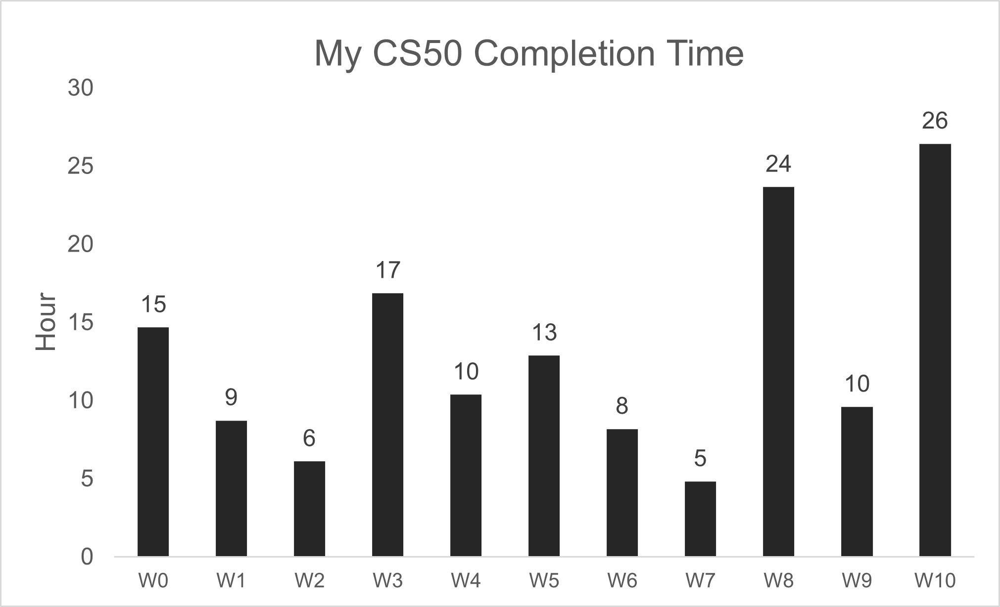
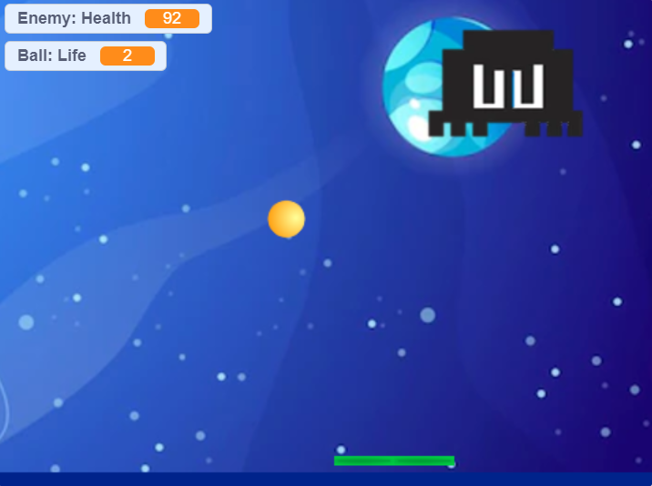

How long did it take me to complete CS50?
Total Completion Time: 142 hours | 12 minutes
Contents
Some clarification
If you find the problems too intimidating, remember: You don't have to code the programs from scratch. The structure, the main, and sometimes a few functions are usually pre-done by CS50 staff. You just need to understand what each part of the code does and complete the code by filling in the blanks.
Week 0 (Scratch) - Total: 14 hours 40 minutes
- Lecture: 1 hour | 45 minutes
- Problem (Scratch project): 12 hours | 55 minutes
I spent quite a lot of time for week 0's problem, more than any other problems, but not because it was a difficult one. Rather, I wanted to perfect my Scratch game, making it as pretty and as similar to the original Block Breaker Boss Fight as possible.
You can check out my game here.
Week 1 (C) - Total: 8 hours | 43 minutes
| Lecture/ Problem | Time | Description | Notes |
|---|---|---|---|
| Lecture | 2h 28m | Introduction to C: data types, operators (+, -, >, == etc.), conditional statement, loops | |
| Problem 1: Hello | 13m | A program that asks the user for their name, then prints "hello, [name]". Input: What's your name? David Output: hello, David |
|
| Problem 2: Mario (less) | 2h 48m | A program that prints a right-aligned pyramid made of #. Input: Height: 3 Output: # ## ### |
Looking back, it shouldn't have taken me this long to figure out this problem. |
| Problem 3: Mario (more) | 2h 48m | A program that prints a pyramid made of #. Input: Height: 3 Output: # # ## ## ### ### |
Tips: Do Mario (less) before this. Mario (more) is just an extended version of Mario (less). |
| Problem 4: Cash | 19m | A program that asks the user for the amount of change, then prints the smallest number of coins with which that change can be made. Input: Change owed: 99 Output: 9 3 quarters (25¢), 2 dimes (10¢), 4 pennies (1¢) |
|
| Problem 5: Credit | 2h 45m | A program that asks the user for a number and then reports whether it is a valid credit card number. Input: Number: 4003600000000014 Output: VISA |
Tips: The program adds the products' digits (not the products themselves) together. |
Week 2 (Arrays) - Total: 6 hours | 6 minutes
| Lecture/ Problem | Time | Description | Notes |
|---|---|---|---|
| Lecture | 2h 8m | Steps involve in compiling a program, debugging, functions, array, variable and scope | |
| Lab: Scrabble | 24m | A program that determines the winner of a short scrabble-like game, where two players each enter their word, and the higher scoring player wins. Input: Player 1: COMPUTER Player 2: science Output: Player 1 wins! |
|
| Problem 1: Readability | 1h 13m | A program that calculates the approximate grade level needed to comprehend some text. Input: Congratulations! Today is your day. You're off to Great Places! You're off and away! Output: Grade 3 |
|
| Problem 2: Caesar | 1h 1m | A program that encrypts messages using Caesar's cipher. Input: key: 13 plaintext: Hello! Output: ciphertext: Uryyb! |
|
| Problem 3: Substitution | 1h 20m | A program that implements a substitution cipher. Input: key: JTREKYAVOGDXPSNCUIZLFBMWHQ plaintext: Hello! Output: ciphertext: Vkxxn! |
Week 3 (Algorithms) - Total: 16 hours | 51 minutes
| Lecture/ Problem | Time | Description | Notes |
|---|---|---|---|
| Lecture | 2h 17m | Big (O) notation, searching and sorting, recursion | Most enjoyable week IMO. |
| Lab: Sort | 21m | Analyze three sorting programs to determine which algorithms they use. | |
| Problem 1: Plurality | 1h 4m | A program that runs a plurality election. Input: Candidates: Alice Bob Charlie Number of voters: 4 Vote: Alice Vote: Bob Vote: Charlie Vote: Alice Output: Alice wins! |
|
| Problem 2: Runoff | 3h 15m | A program that runs a runoff election. | Tips: Write out ON PAPER the inputs and outputs of each step of the program. |
| Problem 3: Tideman | 9h 54m | A program that runs a Tideman election. | Tideman killed me. Only got 87%, and still haven't figured out how to detect cycles. |
Week 4 (Memory) - Total: 10 hours | 22 minutes
| Lecture/ Problem | Time | Description | Notes |
|---|---|---|---|
| Lecture | 2h 26m | Hexadecimal, pointers, memory allocation | |
| Lab: Volume | 1h 49m | A program that modifies the volume of an audio file. | |
| Problem 1: Filter (less) | 3h 14m | A program that applies filters to an image (grayscale, sepia, reflection, blur). | I had so much fun doing this problem. Tips: Draw a 3x3 matrix on paper to figure out how to cover all the pixels. |
| Problem 2: Filter (more) | 43m | A program that applies filters to an image (grayscale, reflection, blur, edges). | |
| Problem 3: Recover | 2h 10m | A program that recovers JPEGs from a forensic image. |

Original image
Grayscale
Sepia
Reflection
Blur

Edge
Week 5 (Data Structures) - Total: 12 hours | 52 minutes
| Lecture/ Problem | Time | Description | Notes |
|---|---|---|---|
| Lecture | 2h 13m | Struct, Linked list, Hash table, Tree, Trie | Most challenging week to me. I think I may have to rewatch the lecture and redo the pset. |
| Lab: Inheritance | 2h 7m | A program that simulates the inheritance of blood types for each member of a family. Child (Generation 0): blood type OO Parent (Generation 1): blood type AO Grandparent (Generation 2): blood type OA Grandparent (Generation 2): blood type BO Parent (Generation 1): blood type OB Grandparent (Generation 2): blood type AO Grandparent (Generation 2): blood type BO |
The first time I had to resort to the solution video. I kept getting segfault :'( |
| Problem: Speller | 8h 32m | A program that spell-checks a file using a hash table. | I just couldn't free my hash table. Had to Google the solution, and found a beautiful method, way simpler and shorter than the one in the walkthrough video - It only uses 1 pointer. |
Week 6 (Python) - Total: 8 hours | 10 minutes
| Lecture/ Problem | Time | Description | Notes |
|---|---|---|---|
| Lecture | 2h 24m | Introduction to Python | So easy. So flexible. Python is a blessing. |
| Lab: World Cup | 1h 19m | A program that runs simulations of the FIFA World Cup. Input: A csv file containing the ratings for each team in the knockout round Output: Belgium: 20.9% chance of winning Brazil: 20.3% chance of winning Portugal: 14.5% chance of winning ... |
|
| Problem 1-6: Sentimental | 2h 20m | Redo week 1 and week 2's Readability using Python. | Took me 1/3 the time I spent doing these in C. Credit, which I started over to implement a new approach, took half the time compared to C. |
| Problem 7: DNA | 2h 7m | A program that identifies a person based on their DNA. Input: a CSV file containing the STR counts for a list of individuals, and a text file containing the DNA sequence to identify Output: Bob |
Week 7 (SQL) - Total: 4 hours | 49 minutes
| Lecture/ Problem | Time | Description | Notes |
|---|---|---|---|
| Lecture | 2h 22m | Introduction to SQL | |
| Lab: Songs | 16m | Write SQL queries to answer questions about a database of songs. | I have learned SQL before, so the pset didn't took me long. |
| Problem 1: Movies | 54m | Write SQL queries to answer questions about a database of movies. | |
| Problem 2: Fiftyville | 1h 17m | Write SQL queries to solve a mystery. | A really fun problem. I love that feeling when I found a new clue and I knew the answer was right around the corner ^^ |
Week 8 (HTML, CSS, JavaScript) - Total: 23 hours | 39 minutes
| Lecture/ Problem | Time | Description | Notes |
|---|---|---|---|
| Lecture | 2h 53m | Web development, TCP/IP | Learning 3 new languages at once sounds scary, but just keep inspecting websites with interesting design, and you'll figure everything out in no time! |
| Lab: Trivia | 2h 59m | Write a webpage that lets users answer trivia questions. | Tips: My Javascript code didn't work until I put it at the end of the body. Try this if you're stuck. |
| Problem: Homepage | 17h 47m | Build a simple homepage using HTML, CSS, and JavaScript. | I knew I would still get 100% even if my website is just a simple one with no aesthetic or proper content, but I wanted to create something useful. That is why I spent 18 hours creating this website instead! |
Week 9 (Flask) - Total: 9 hours | 35 minutes
| Lecture/ Problem | Time | Description | Notes |
|---|---|---|---|
| Lecture | 2h 16m | Web app development | |
| Lab: Birthdays | 1h 18m | Create a web application to keep track of friends' birthdays. | |
| Problem: Finance | 6h 1m | Implement a website via which users can “buy” and “sell” stocks. | Tips: Test by buying and selling both stocks that you already own and stocks that you don't own, multiple times. Although check50 gives me 100%, I later found out that if I buy more shares of a stock I already had, there would be an error. |
Week 10 (Emoji) - Total: 1 hours | 25 minutes
A webinar about how emojis came to be.
Final Project - Total: 25 hours+
My final project is a remake of The Evolution of Trust's sandbox by Nicky Case, with some modifications, using Python.